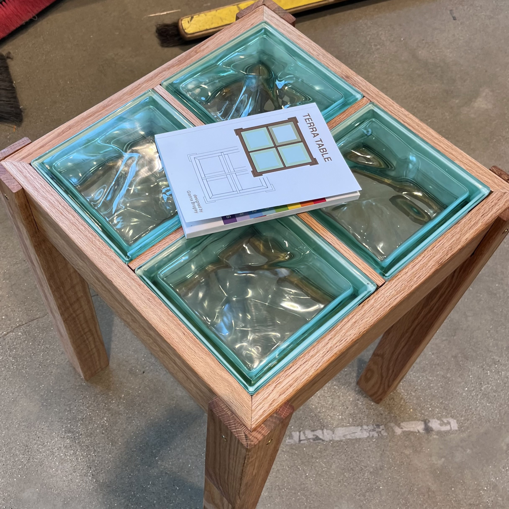

Project Summary
I designed a side-table, called the Terra Table, in 10 weeks for a furniture design class in Spring ‘24. Despite limited prior experience with shop machinery, I had an ambitious goal to build something I would want to look at every morning: a bedside table, featuring my love for plants. My table:

Process
- Ideation: I was inspired by recycled glass bricks I found for free in a Chicago suburb and thought that their hollow structure would make the perfect cavity for a plant. I also envisioned the foundation being a puzzle piece of nesting components that were held together by the weight of the glass blocks.
- Prototyping: Figuring out how to make the interlocking grid for the foundation of my table was tricky and required lots of prototyping with paper, foam core, and scrap plywood.
- Mockups: I drew my table to scale in Adobe Illustrator, forming the individual pieces and then bringing them together to ensure the pieces fit together perfectly. I was also able to visualize my table better and get more organized before the construction step.
- Construction: I built the foundation of my table using red oak 4x4s and utilized the table saw and mill to “carve” out the shape each individual piece. I assembled the table using gold bolts and thread inserts, and finally put the glass blocks in place. I also used a water jet to cut the top off of a glass block in order to put a plant inside.

Learnings